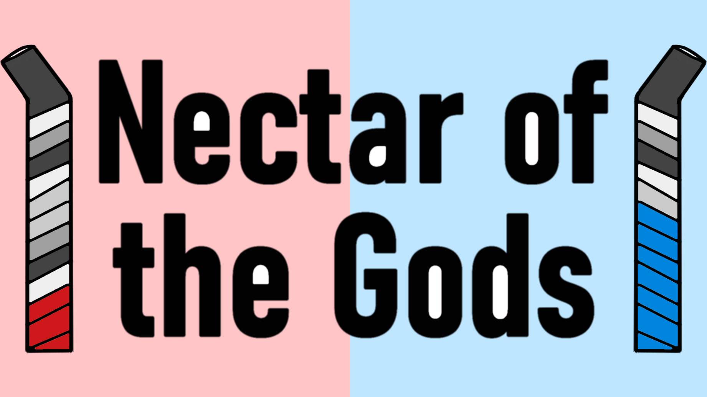
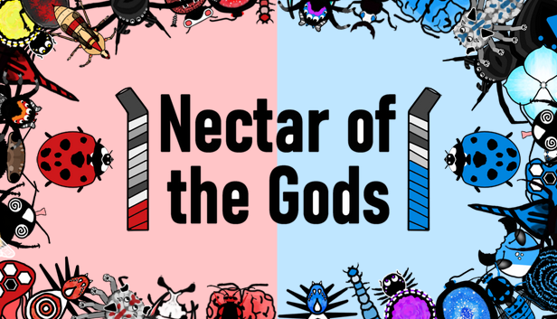
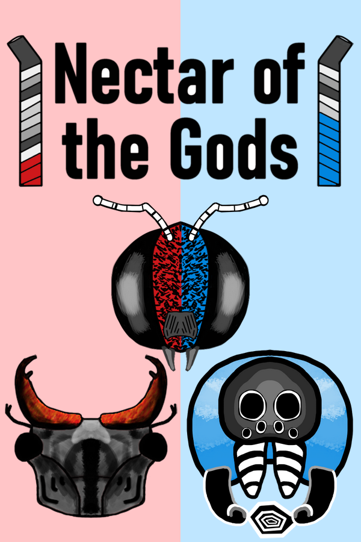

Description
Nectar of the Gods is an unquenchable head-to-head real-time strategy game where bugs battle over the finest beverages. You must strategically deploy a chosen bug family, nimbly navigate the countertop, and claim liquid nirvana!
History
How it Started
Nectar of the Gods started in Summer 2019 when I got addicted to speed chess. In speed chess you are training up on tactics and patterns but implementing them faster than you are consciously choosing them. At your fingertips you can have a 2 minute battle with a stranger on the internet filled with mini triumphs, brutal mistakes, emergent scenarios, and more. And it’s all on a clock, you have to think on your toes and become completely absorbed. There’s no time to second guess or agonize over decisions. It’s all a really satisfying flow state and instinct exercise. The fact that it is self contained in a short but sweet experience that is easy to have over and over again but also easy to walk away from at any time also appealed to me.
Early Design
I chose to focus on making a multiplayer game because that’s the type of game I love to play. I adore human interaction through games and matching wits against real people rather than AI. And somewhere along the way the elegant simplicity of chess morphed towards the real time strategy game genre with concepts like resource management and environmental randomness. Bugs were also gonna be the stars. I have always had a weird fascination with bugs. My first game was about bees, and I think it’d be cool to take up beekeeping if I’m ever lucky enough to have land. I think the idea of them being addicted to sweet beverages game from an ant invasion into my apartment. They were so coordinated and excited about our kitchen!
Putting it Together
I had programming skills from my career as a software engineer. But I had no real experience making art or animating. After picking a cheap tablet and watching a few tutorials I found my style and started having a lot of fun drawing the bugs and drinks that flowed from my mind. Everything in Nectar of the Gods is hand drawn and animated frame by frame. Luckily it's much much easier to animate bug legs than human locomotion. I saved the online multiplayer and music for last. I was quite scared of the online code. But in the end Steam offered free matchmaking and peer-to-peer networking tools that made the process much easier than a lot of the from scratch solutions. For music I lucked out with Tiffany Hwa. She went to med school with my partner's sister and just so happened to compose music on the side! She loved the game concept and collaborating with her on theme and game music was a delight.
Features
- Party any way you want: Solo, Local Multiplayer, Online with Friend, Unranked Online, Ranked Online
- 24 unique bugs with special abilities and quirks for you to optimize across 3 Bug Families (Beetle Brigade, The Hive, Spidey Party)
- Navigate 3 dynamic countertops: Soda Fountain, Boba Shop, Coffee Bar
- Colorful, delicious visuals to immerse you in the miniature conflict
- Catalog your journey with detailed game statistics and achievements
- Lead your bugs with multiple inputs: M/K or Controller
Videos
Nectar of the Gods Gameplay Trailer — YouTube
Images
{kind=link}
{kind=link}
{kind=link}
{kind=link}
{kind=link}
{kind=link}
Logo & Icon
  {kind=link}
{kind=link}
{kind=link}
Widgets
Additional Links
- Game Development Blog
- bthomas2622.github.io.
- Request Press Copy
- Email me at benthomasdeveloper@gmail.com for a press copy of NotG DLC .
- Game Monetization
- Ben Thomas allows for the contents of Nectar of the Gods to be published through video broadcasting services for any commercial or non-commercial purposes. Monetization of videos created containing assets from Nectar of the Gods is legally and explicitly allowed by Ben Thomas .
About Ben Thomas
- Boilerplate
- Ben Thomas is an independent game developer building distinct strategic multiplayer games that bring people together.
- More information
- More information on Ben Thomas, our logo & relevant media are available here.
Nectar of the Gods Credits
- Ben Thomas
- Design, Programming, Art, Sound
- Tiffany Peng Hwa
- Music, Freelancer
Contact
- Ben Thomas
- benthomasdeveloper@gmail.com